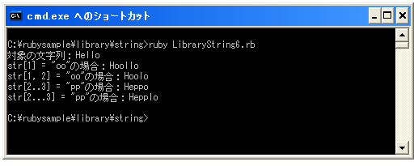

- Home ›
- Ruby入門 ›
- 文字列(String)クラス
文字列の一部分を置き換える
文字列の中の一部分を他の文字列で置き換える方法を確認します。
指定位置の1文字を別の文字列に置き換える
指定の1文字を別の文字列に置き換える方法です。
文字列[nth] = newString
引数に指定した位置の文字を新しい文字に置き換えます。位置の指定はバイト単位で指定し先頭の文字が0番目となります。
具体的には次のように記述します。
str = "Hello" str[1] = "oo"
上記の場合には変数「str」には「Hoollo」と言う文字列が格納されます。
※置き換え対象はの文字は1文字ですが置き換える文字列は1文字である必要はありません。
開始位置と長さで指定したた部分文字列を置き換える
指定した開始位置から指定した長さの文字列を別の文字列に置き換えます。
文字列[nth, len] = newString
1番目の引数に取得する文字の開始位置を指定します。単位はバイトで先頭が0番目となります。2番目の引数で取得する文字の長さを指定します。単位はバイトです。開始位置から指定した長さの部分文字列を新しい文字列に置き換えます。
具体的には次のように記述します。
str = "Hello" str[1, 2] = "oo"
上記の場合には変数「str」には「Hoolo」と言う文字列が格納されます。
開始と終了位置で指定した部分文字列を置き換える
開始位置と終了位置を指定した文字列を別の文字列に置き換えます。
文字列[first..last] = newString
1番目の引数に取得する文字の開始位置を指定します。単位はバイトで先頭が0番目となります。2番目の引数では取得する文字の終了位置を指定します。単位はバイトです。開始位置から終了位置までの部分文字列を新しい文字列に置き換えます。
具体的には次のように記述します。
str = "Hello" str[2..3] = "pp"
上記の場合には変数「str」には「Heppo」と言う文字列が格納されます。
別の指定方法で開始と終了位置で指定した部分文字列を置き換える
開始位置と終了位置を指定して対象の文字列を指定しますが指定の方法が前回と異なります。
文字列[first...last]
1番目の引数に取得する文字の開始位置を指定します。1番目の文字の左側の位置が「0」、1番目の文字と2番目の文字の間の位置が「1」となります。2番目の引数では取得する文字の終了位置を指定します。位置の指定方法は1番目と同じです。この構文では1番目と2番目の引数で指定した位置に挟まれた文字が置き換え対象の部分文字列となります。
具体的には次のように記述します。
str = "Hello" str[2...3] = "pp"
上記の場合には変数「str」には「Hepplo」と言う文字列が格納されます。
サンプルプログラム
では簡単なサンプルで試してみます。
#! ruby -Ks
str = "Hello"
print("対象の文字列：", str, "¥n")
str[1] = "oo"
print("str[1] = ¥"oo¥"の場合：", str, "¥n")
str = "Hello"
str[1, 2] = "oo"
print("str[1, 2] = ¥"oo¥"の場合：", str, "¥n")
str = "Hello"
str[2..3] = "pp"
print("str[2..3] = ¥"pp¥"の場合：", str, "¥n")
str = "Hello"
str[2...3] = "pp"
print("str[2...3] = ¥"pp¥"の場合：", str, "¥n")
実行結果は次のようになります。

( Written by Tatsuo Ikura )

著者 / TATSUO IKURA
初心者～中級者の方を対象としたプログラミング方法や開発環境の構築の解説を行うサイトの運営を行っています。